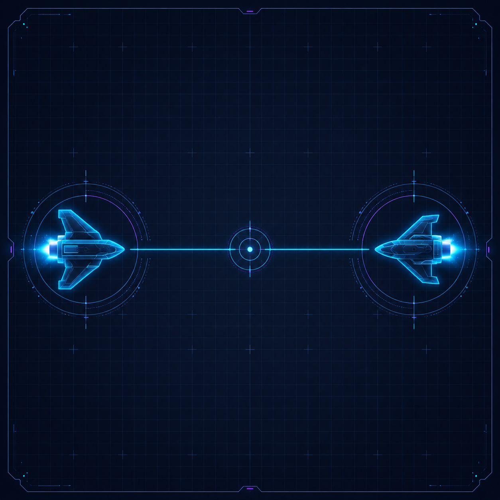
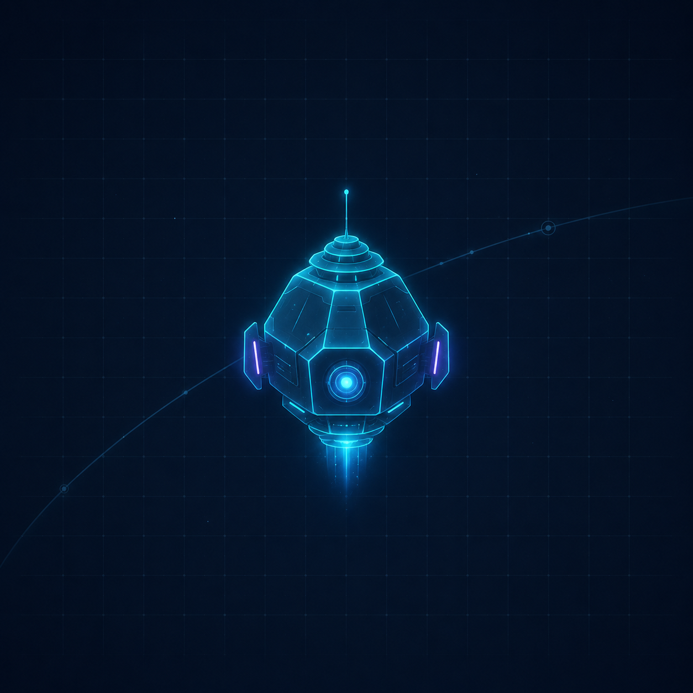

Science
Science drivers
Black holes, relativistic jets, star and planet formation, evolved stars, and other compact structures requiring extreme angular resolution.
Black holes, relativistic jets, star and planet formation, evolved stars, and other compact structures requiring extreme angular resolution.
From focused demonstrators to ambitious multi-spacecraft observatories, the initiative studies credible paths toward a future space array.
Key enabling technologies include inter-satellite metrology, time and frequency transfer, data transport, correlation, orbit determination, and imaging.
Space Array imagines astronomical instrumentation as a coordinated system: multiple spacecraft, long baselines, precise timing, and interferometric reconstruction working together as one observatory.
Space interferometry is becoming timely because spacecraft, timing, data links, computing, and imaging methods are advancing together.
Small satellite platforms make distributed astronomical instruments more realistic than previous monolithic space observatories.
Stable clocks and time-transfer concepts can support coherent observations across widely separated spacecraft.
High-rate inter-satellite and downlink systems can move the large data volumes needed for interferometric correlation.
Modern processing architectures enable new approaches to correlation, calibration, simulation, and mission operations.
Advanced reconstruction methods can help extract science from sparse, evolving, long-baseline datasets.
The development of Space Array will unfold through a series of phases, each building on the previous one.

Initial exploration of scientific goals and technical feasibility.

Detailed mission design and technology development.

Flight demonstration or mission proposal development to validate key technologies with real space data.
News, workshops, technical studies, and community milestones from the Space Array initiative.
Community discussions are being developed around science drivers, evolving space baselines, interferometric architectures, and candidate mission concepts.
Get involvedSHARP provides a concrete framework for connecting black-hole science goals to space-VLBI technology requirements.
Read about SHARPKey study areas include timing, inter-satellite links, baseline reconstruction, data handling, correlation, and imaging.
View roadmap